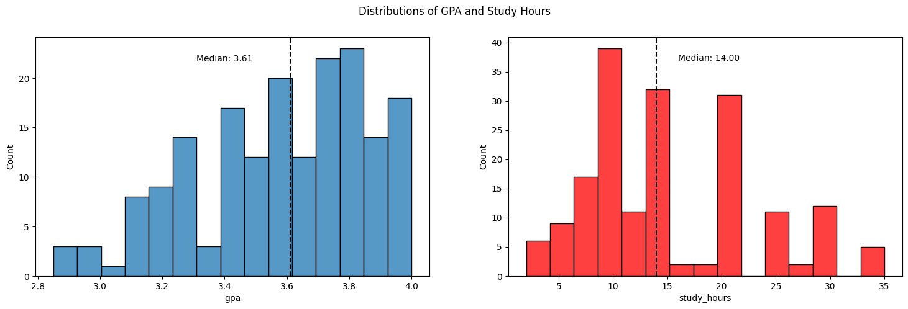
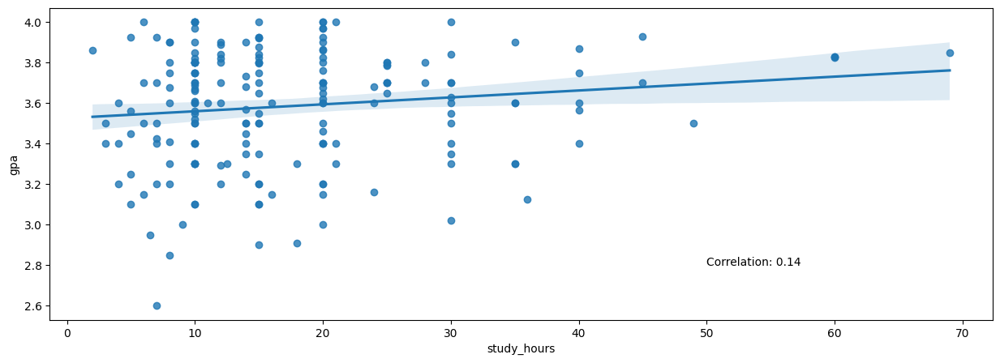
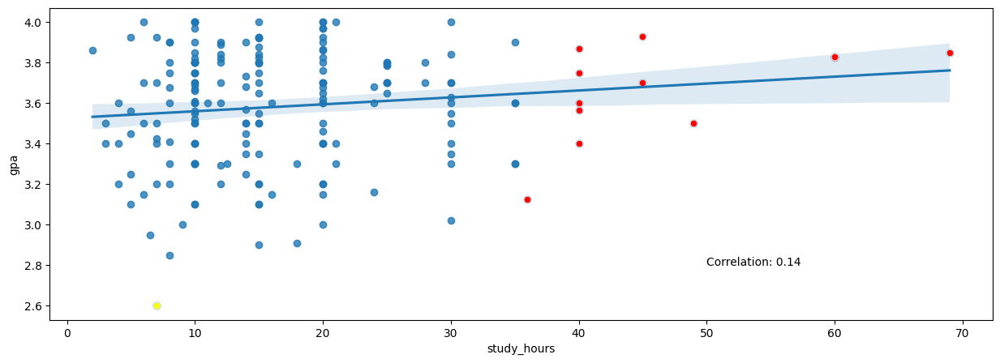
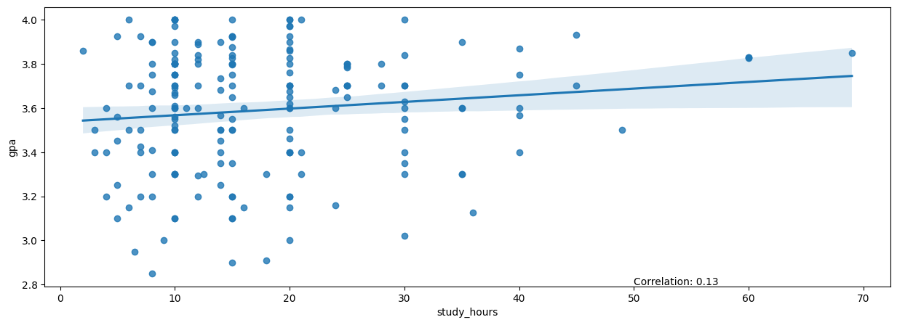
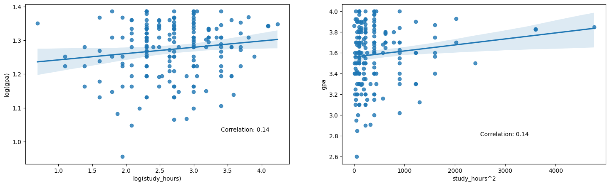

#Import libraries
import opendatasets as od
import pandas as pd
import numpy as np
import matplotlib.pyplot as plt
import seaborn as snsIntroduction
The hope of this analysis is to demonstrate that there is a quantifiable relationship between GPA and study hours. We recognize that the collected data was self reported and therefore can be dishonest. Nonetheless, our goal is to still find a way to quantify a relationship between GPA and study hours to:- Gather inference to determine how GPA changes based on increase study time
- Predict what a student’s GPA would be based on study time
Data for this analysis can be found here
Exploratory Data Analysis (EDA)
Import data and libraries
We begin our analysis by importing the following libraries to create data visualizations as well as properly format and filter our data.
We read in our data using pandas and will use the head function to check out the data.
#Check dataframe
df.head()| gpa | study_hours | |
|---|---|---|
| 0 | 4.00 | 10.0 |
| 1 | 3.80 | 25.0 |
| 2 | 3.93 | 45.0 |
| 3 | 3.40 | 10.0 |
| 4 | 3.20 | 4.0 |
The head result indicates that the data has been read in correctly. In the next section, we will begin to clean the data.
Data Cleaning
We will begin our data cleaning by getting some basic summary statistics from the dataframe.
#Describe dataset
df.describe()| gpa | study_hours | |
|---|---|---|
| count | 193.000000 | 193.000000 |
| mean | 3.586166 | 17.476684 |
| std | 0.285482 | 11.408980 |
| min | 2.600000 | 2.000000 |
| 25% | 3.400000 | 10.000000 |
| 50% | 3.620000 | 15.000000 |
| 75% | 3.800000 | 20.000000 |
| max | 4.300000 | 69.000000 |
The resulting dataframe shows that we have 193 rows of data where on average the gpa is 3.58 with a standard deviation of .28. Average study hours show 17.47 and standard deviation of 11.4, meaning we have a large spread in the distribution of study hours but not too much in gpa. From the summary statistics, we can easily see that the max value is invalid as the scale we are using for this analysis is 0-4. We will eliminate any rows that fall outside of this range.
#Check datatypes
df.dtypesgpa float64
study_hours float64
dtype: objectChecking the datatypes of each of the columns, we see that each is of type float. This confirms that all rows in each column are of the same datatype and, in theory, we do not need to clean up any corrupted data/poorly entered data.
#Check for null values
df.isnull().sum()gpa 0
study_hours 0
dtype: int64In addition, checking for nulls, we see there are none so we do not need to do anything with those. In the next code chunk, we will eliminate erroneous gpa entries.
#Convert outlier GPA (erroneous entries) to 4.0
df = df.assign(gpa = lambda x: np.where(x.gpa > 4, 4, x.gpa))In the above chunk, we use the assign function to override the gpa column and change values that are above 4 to just 4 while leaving all others the same.
Data Viz
The first visualization we will look at is comparing the distributions of gpa and study hours. We want to get a side by side look so we will use the subplots functionality from matplotlib. As well, we will plot the median of the two respective distributions to know where the 50% percentile lies. The following code produces Figure 1.
# Check distributios of gpa and study hours
fig, (ax1, ax2) = plt.subplots(1, 2, figsize = (18, 5))
sns.histplot(x="gpa", data=df, ax=ax1, bins=15)
ax1.axvline(df.gpa.median(), color="black", linestyle="dashed")
ax1.text(df.gpa.median() - 0.3, ax1.get_ylim()[1] * 0.9, f"Median: {df.gpa.median():.2f}")
sns.histplot(x="study_hours", data=df, ax=ax2, color="red", bins=15)
ax2.axvline(df.study_hours.median(), color="black", linestyle="dashed")
ax2.text(df.study_hours.median() + 2, ax2.get_ylim()[1] * 0.9, f"Median: {df.study_hours.median():.2f}");
#fig.suptitle("Distributions of GPA and Study Hours");
From Figure 1, we see that GPA appears to be slightly left skewed with a couple of outliers to the left of the distribution. Study hours appears to be more right skewed with more outliers towards the right of the distribution. Median for GPA is 3.62 and 15 for study hours.
Since we are working with two quantitative variables, we can use a scatterplot to view how linear their relationship (ie correlation) as well as view the where each gpa falls for a given amount of study hour. The below code produces Figure 2.
#Scatterplot of gpa and study hours
plt.figure(figsize=(15,5))
sns.regplot(x='study_hours', y='gpa', data=df)
corr_coef = np.corrcoef(df.study_hours, df.gpa)[0][1]
plt.text(50, 2.8, f"Correlation: {corr_coef:.2f}");
Figure 2 shows that the linear relationship between study hours and GPA is not very strong. An exact score of .14 for the correlation indicates a weak linear relationship. Further more, like we already saw from the histograms, the data appears to be more grouped towards the beginning of the x axis (0-20ish hours).
We can attempt to adjust the distribution and correlation of the dataset by removing outliers. However, because the outlying dots appear to follow the trend of the data (more or less…) and we always like keeping as much data as possible, this is merely an optional step to fulfill our curiosity.
We will define an outlier as a point that falls outside of a box-plot range. Below is the function we will use to define and identify outliers.
#Identify outliers
def find_outliers(x, column_name):
q1 = x[column_name].quantile(.25)
q3 = x[column_name].quantile(.75)
iqr = q3 - q1
lower = q1 - (1.5 * iqr)
upper = q3 + (1.5 * iqr)
outliers = x[(x[column_name] < lower) | (x[column_name] > upper)]
return outliers
The function calculates the IQR of the dataset and then returns a filtered dataframe based on whether a point passes the upper or lower bound of the box-plot. For example, below we see how the function identifies outliers using the GPA attribute.
#Find outliers for gpa
find_outliers(df, "gpa")| gpa | study_hours | |
|---|---|---|
| 108 | 2.6 | 7.0 |
Similarily, we can view the outliers for study hours below.
#Find outliers for study hours
find_outliers(df, "study_hours")| gpa | study_hours | |
|---|---|---|
| 2 | 3.930 | 45.0 |
| 7 | 3.400 | 40.0 |
| 13 | 3.830 | 60.0 |
| 51 | 3.868 | 40.0 |
| 57 | 3.125 | 36.0 |
| 77 | 3.566 | 40.0 |
| 83 | 3.850 | 69.0 |
| 89 | 3.700 | 45.0 |
| 122 | 3.750 | 40.0 |
| 125 | 3.500 | 49.0 |
| 130 | 3.825 | 60.0 |
| 135 | 3.600 | 40.0 |
| 169 | 3.830 | 60.0 |
Figure 3 below shows which points are labeled as outliers from our scatterplot.
#Plot original scatterplot
plt.figure(figsize=(15,5))
sns.regplot(x='study_hours', y='gpa', data=df)
corr_coef = np.corrcoef(df.study_hours, df.gpa)[0][1]
plt.text(50, 2.8, f"Correlation: {corr_coef:.2f}")
#Show outliers by study hours (color red)
sns.scatterplot(x='study_hours', y='gpa', data=find_outliers(df, "study_hours"), color='red')
#Show outliers by gpa (color yellow)
sns.scatterplot(x='study_hours', y='gpa', data=find_outliers(df, "gpa"), color='yellow');
As already indicated, the red dots are outliers according to the “study hours” metric while yellow indicates outlier for “gpa”. While the red dots are technically “outliers”, they do sort of follow the general trend and direction of the data whereas the yellow dot does not. Let’s try removing the yellow dot to see how it changes the correlation of the data.
#Remove outliers from dataset
df_filtered = df.query("gpa > 2.6")After removing the gpa outlier, the scatterplot and corresponding correlation are as follows.
#Scatterplot of gpa and study hours
plt.figure(figsize=(15,5))
sns.regplot(x='study_hours', y='gpa', data=df_filtered)
corr_coef = np.corrcoef(df_filtered.study_hours, df_filtered.gpa)[0][1]
plt.text(50, 2.8, f"Correlation: {corr_coef:.2f}");
We see that removing the gpa outlier had a minimal effect on the correlation (actually slightly decreased) thus “weakening” the linear relationship of the variables. Perhaps we can try a non-linear transformation to aid our non-linear data.
To do this, we will perform a log transformation on both gpa and study hours (on our original dataset) and a polynomial transformation on study hours. Below is the result of our transformations.
#Plot log transformed data
fig, (ax1, ax2) = plt.subplots(1, 2, figsize = (18, 5))
sns.regplot(x='study_hours', y='gpa', data=np.log(df), ax=ax1)
ax1.set_xlabel("log(study_hours)")
ax1.set_ylabel("log(gpa)")
corr_coef = np.corrcoef(df.study_hours, df.gpa)[0][1]
ax1.text(np.log(30), np.log(2.8), f"Correlation: {corr_coef:.2f}")
#Plot polynomial transformed data
df_poly = df.assign(study_hours = lambda x: x.study_hours**2)
sns.regplot(x='study_hours', y='gpa', data=df_poly, ax=ax2)
ax2.set_xlabel("study_hours^2")
corr_coef = np.corrcoef(df.study_hours, df.gpa)[0][1]
ax2.text(50**2, 2.8, f"Correlation: {corr_coef:.2f}");
In Figure 5, we see that our transformations really had not effect on the linear relationship. For the sake of getting on with the modeling, we will use our base dataset and interpret the model accordingly (barring that the other model assumptions hold).
Normal (Frequentist) Modeling
I hesitate to use the word normal here as that term usually denotes a different meaning in the world of statistics, but I want to separate the modeling section into two parts.- Frequentist approaches
- Bayesian approaches
After all, this is thebayesianbandit, but I like providing frequentist approaches as well to show the differences and similarities between normal statistical modeling (frequentist) and bayesian modeling.
Linear Regression Framework
Since we are dealing with “linear” data, it would make sense to attempt to attempt to fit a linear model to the data. Therefore, we will be utilizing a simple linear regression (SLR) model to model the relationship between GPA and study hours (per week). Below is the equation we will use.
\[\begin{equation} y = X\beta + \epsilon \end{equation}\]
\[\begin{equation} \epsilon \sim N(\mu, \sigma^2) \end{equation}\]
The above formula models our response variable is equal to our matrix of explanatory variables (in this case, just one) multiplied (scaled) by a matrix of betas, plus errors (residuals) that are distributed normally with mean \(\mu\) and variance \(\sigma^2\)